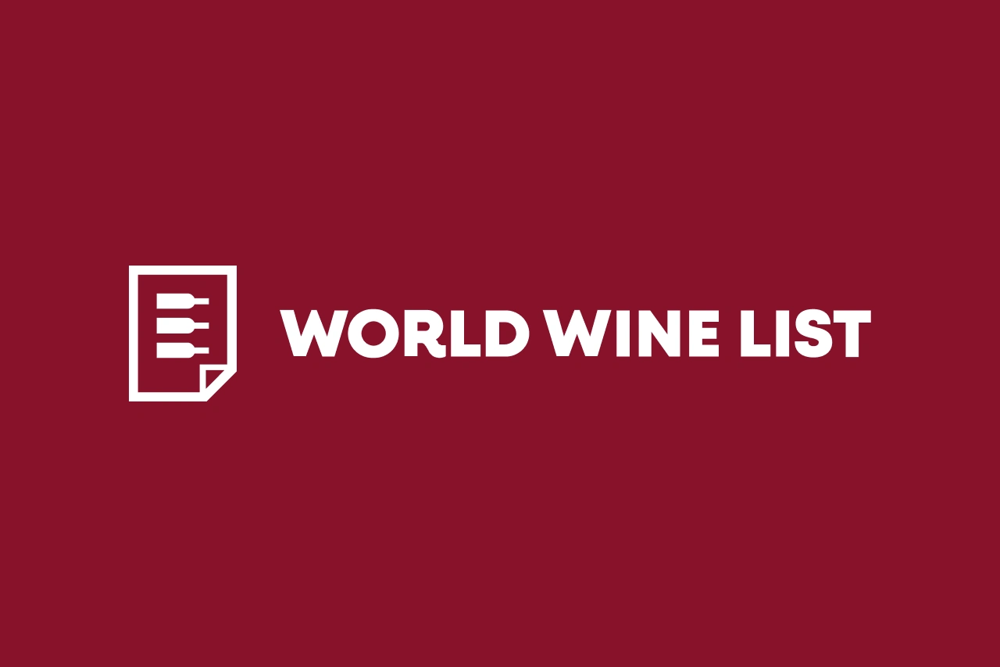
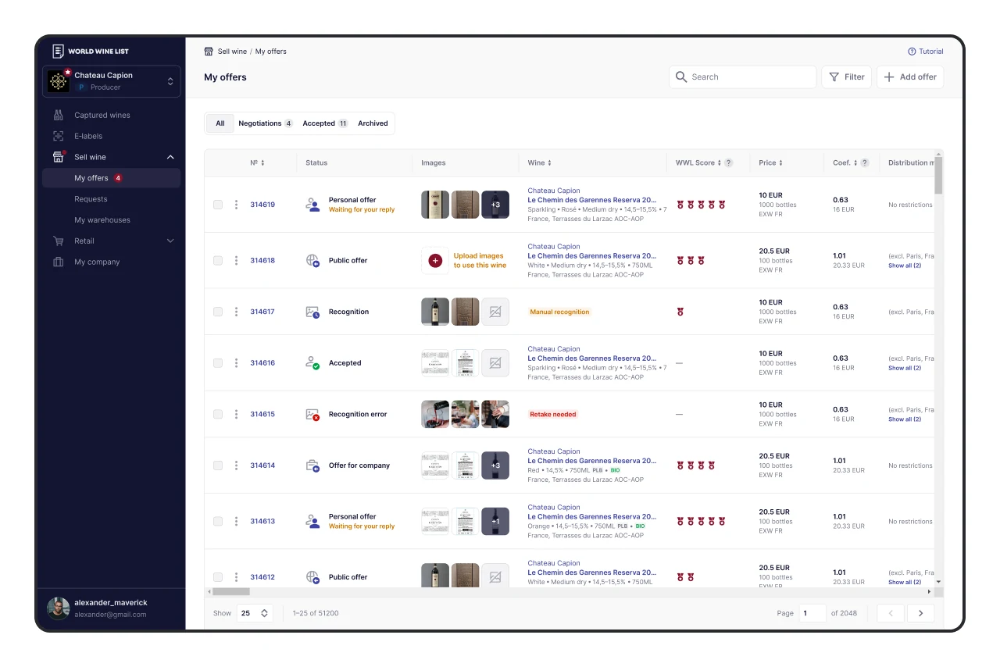
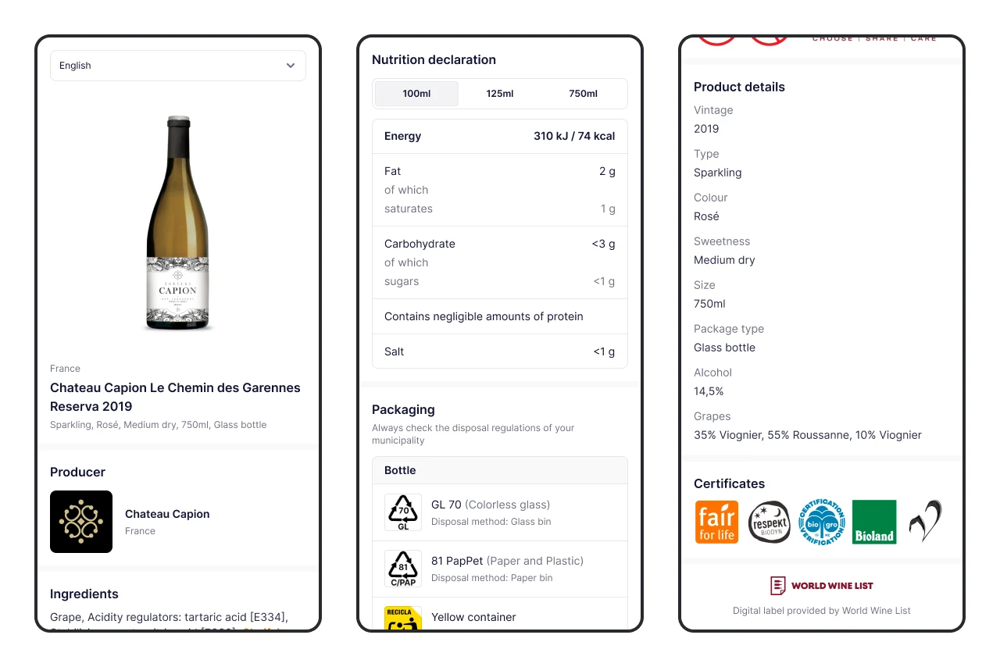

World Wine List / 2022–2026
Международная цифровая B2B‑платформа, объединяющая верифицированных участников винного рынка: винодельни, импортёров, дистрибьюторов и ритейлеров. Сервис помогает находить вино напрямую у поставщиков и заключать сделки внутри единой экосистемы.

Роль
UX/UI-дизайнер в составе аутсорсинговой дизайн-команды. Работал в паре с прикреплённым продакт-менеджером со стороны заказчика. Участвовал в анализе задач, обсуждении решений, согласовании интерфейсов и сопровождении реализации.
Зона ответственности
Проектирование пользовательских интерфейсов и сценариев. Разработка новых функций и развитие существующих разделов платформы, подготовка макетов к разработке, поддержка и развитие UI-кита продукта.
Развивал существующую платформу
На старте работы World Wine List уже была функционирующей платформой с большим количеством разделов и пользовательских сценариев. Поэтому основной задачей было постоянное улучшение пользовательского опыта: развитие существующего функционала, обновление интерфейсов и расширение возможностей платформы.
Что сделал
- Обновил навигацию, таблицы, фильтрацию и контекстные меню.
- Расширил страницы существующих в рамках платформы сущностей, обновил сценарии их создания и редактирования.
- Сделал дэшборд с виджетами с основной информацией, необходимой каждому типу пользователя.
- Улучшил сценарии торговли: сделал отдельную страницу оффера с историей переговоров, отдельную страницу реквеста, внедрил возможность сохранять их как черновики.
- Спроектировал обучающий тур для новых пользователей и обучающие руководства для отдельных страниц.
- Сделал систему более отзывчивой и понятной: добавил уведомления для обратной связи о действиях пользователя, доработал состояния страниц и отдельных компонентов.
- Спроектировал шаблоны электронных писем.
- Поддерживал и развивал UI-kit: полностью обновил шрифт во всей системе, структурировал компоненты, сделал консистентными цвета, скругления и отступы.

Спроектировал раздел с электронными этикетками
Изменения требований к маркировке вина в ЕС создали потребность в предоставлении информации о составе и пищевой ценности вина в электронном виде. Поскольку World Wine List уже располагал базой вин, на её основе был разработан новый раздел с возможностью создания, публикации и управления электронными этикетками.
Что сделал
- Спроектировал раздел для создания и управления электронными этикетками на основе данных существующих вин.
- Реализовал монетизацию раздела: подключение пробного периода, выбор тарифа и процесс покупки подписки.
- Спроектировал отдельный лендинг для продвижения сервиса электронных этикеток.
- По мере изменения требований к этикеткам дорабатывал сценарии работы с ними и страницей вина.

Выводы
Работа над World Wine List показала важность системного подхода к развитию уже работающего продукта. Большая часть задач была связана не с созданием интерфейсов с нуля, а с постепенным улучшением существующих сценариев и их согласованием между собой. При этом развитие платформы позволяло находить новые продуктовые возможности — как в случае с электронными этикетками, где существующая база вин стала основой для нового сервиса и модели монетизации.